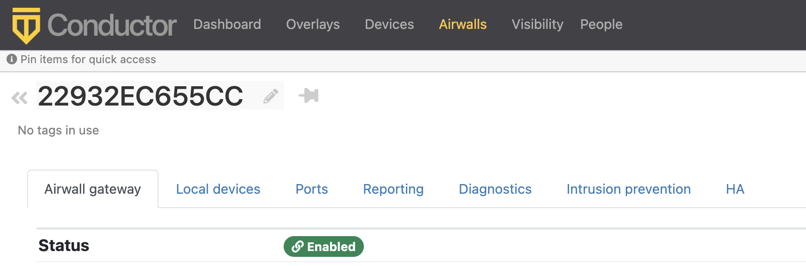

What's New in 3.1.0
This version of the Airwall Solution includes several usability and functionality improvements that can simplify and streamline the setup and diagnostics for an Airwall secure network.
Tutorial and Help Improvements
- What's new Tutorial – You can now see what’s new by running the Dashboard tutorial from the Conductor Dashboard.
- Help links for a page – In addition to tutorials, you can now access more specific Airwall help content for a page from the ? menu on most pages.
- Video overviews and demos – For video overviews and demos of the Airwall Solution, see Video Overview and Demos.
New tools to troubleshoot connectivity issues
The Conductor Connectivity checker does a full analysis of the connectivity between two devices in your Airwall secure network.
Learn more – Connectivity checker
Run Conductor as a Relay
For small- to moderate-sized Airwall secure networks, you can run your Conductor as a relay, rather than having a separate Airwall Relay. Since Airwall Edge Services must all be able to reach the Conductor, using it as an Airwall Relay simplifies your deployment. You must have both a Conductor and an Airwall Relay license to run your Conductor as a relay.
Learn more – Run the Conductor as an Airwall Relay
Control Access with People Groups
Using people groups, you can control what the people in the group can see and use on the Conductor, including cloud providers, Airwall Gateways, and Overlay networks and resources. You can also now see to which overlay networks the people group has permissions.
Learn more – Customize People's Access to your Airwall secure network with People Groups
Airwall Gateway High Availability (HA) Heartbeat options
You now have a choice on how the Airwall Gateway HA heartbeat functions. When setting up an Airwall Gateway HA pair, you can choose how to do the heartbeat between the two HA units. There are two options: LAN mode or routed mode.
Learn more – Configure High Availability Airwall Gateways (v2.2.8 and later)
Remote Airshell
For remote administration of Airwall Gateways, you can use Airshell to run diagnostic and configuration commands from the Conductor.
Learn more – Run Airshell remotely from the Conductor
Airshell Additions and Improvements
The following commands and functionality have been added to Airshell:
nmap– (Network mapping support) Maps your network for discovery or security audits. Learn more: Do network discovery and security audits in Airshell (nmap)table– See the table command at Airshell (airsh) Command Reference.conductor ping– Newconductor pingAirshell command for Airwall Gateways, Linux Airwall Servers, and macOS Airwall Agents checks name resolution and performs TLS connection attempt with every configured Conductor URI.status dnscacheandstatus dnscache flush– For Airwall Gateways, dumps or flushes the DNS cache.status threads– Reports CPU and memory usage of threads of major services running on an Airwall secure network.status– Results now show information (revision hash and date) for the installed cellular firmware package.
Learn more – Airshell (airsh) Command Reference
Conductor and Airwall Edge Services Improvements
Navigation and Search
- Back Navigation – On most pages, you now have a link back to the original
page. For example, from an Airwall Edge Service page, you can select the back icon to get back to the list of Airwall Edge Services.

- Search by Expression – The Conductor now supports an alternative to full text search, searching by expressions using the Conductor Query Language. Searching by expression is available in the search boxes on the Overlays, Airwalls, Devices, People, and Dashboard pages. Learn more: Search by Expression with the Conductor Query Language
- Device quick filter – The quick filter for devices is now also available on the Dashboard Devices list.
Overlay network graph
- Multi-select – Select more than one item on the network graph by holding down the meta key for your platform (Ctrl on Windows, or cmd on macOS) and clicking on multiple items. You can then use the context menu to create a device group or remove the items from the network.
- Overlay Edit options – The network graph also now has Edit layout and Edit trust options.
- Create device group – You can now create a device group by using multi-select to select devices, then right-click to create a device group.
- Airwall model information – When you hover over an Airwall Edge Service in the Airwall Edge Service network graph, the graph now shows the Airwall Edge Service model.
Learn more: Add and remove device trust
Set a preference for your overlay networks view
Go to and scroll down to the bottom. Toggle the Default overlay networks to advanced view to show or hide the advanced view by default.
Learn more: Change My Conductor Preferences
Diagnostics and Monitoring Improvements
- Email failure alerts – When emails fail to send, the Conductor now shows alerts and records system events.
- Summary for check secure tunnels – There is now a summary for the Check secure tunnels Airwall Edge Service diagnostic tool indicating the number of remote Airwall Edge Services and the number of active tunnels.
- Firmware Revision information – In the Conductor, on an Airwall Edge Service page, revision information is shown on the main page below the Airwall Edge Service's firmware revision.
- Ping peer Airwalls – This diagnostic tool now indicates if traffic was conducted over a relay and which relay it used.
- Airwall Relay diagnostics – on an Airwall Relay now shows the IP addresses of the communicating Airwall Edge Services, as seen from the viewpoint of the relay.
- HIP tunnel stats – HIP tunnel stats now default to On, and are sent every 5 minutes for newly-connected Airwall Edge Services that support the feature. Go to to see how much traffic you have over each tunnel.
- HIP tunnel event monitors – You can now configure a delay for actions on HIP tunnel event monitors, allowing you to reduce noise for transient events (for example, an Airwall Edge Service that goes offline briefly). There is also improved tracking and messaging around why a tunnel has closed. You can filter on the reasons a tunnel closed so that event actions are not performed for certain reasons. For example, you may not want to alert when a tunnel goes down due to an idle timeout (no traffic passed).
- More fields for Templated values in Event monitor actions - You can now use any data that is part of the monitored object by adding it as a templated value. For example, in the HTTP call action, you could use the Airwall Edge Service's name with "${monitored_object.name}", or get a device's overlay IP with "${monitored_object.overlay_device_ip}".
- PCI user activities – Now indicate if an action was performed via API.
Airwall Agents and Servers Improvements
- Linux – The Linux Airwall Server now supports traceroute from the Conductor diagnostic page when installed and available. Looks for the presence of traceroute or tracepath. It also now remembers its state when you update the firmware, and return to that state after the update (either active or inactive).
- Android – The Android Airwall Agent now restarts when you update the app, or if you restart the device while the app service is running. You can also now ping devices on the Network page.
Deployment Improvements
- Cloud accounts – The Airwall Gateway detects the cloud accountid used during deployment and sends that provider-specific value to the Conductor.
- Google Cloud – There is now a standalone Airwall Gateway deployment for Google Cloud.
- Device discovery – The Conductor now shows the time a device was discovered.
- Easier OpenID Connect integration troubleshooting – It is now easier to troubleshoot integrating your Conductor with an OpenID Connect provider using Conductor Airshell and log following. Learn more: Integrate Third-party Authentication with OpenID Connect
Security and Privacy Updates
- New overlay network role for Network Administrators – The roles available for overlay permissions now are viewer, user, or manager. For more information, see Edit people who can access an overlay network.
- New
conductor pingairsh command for Airwall Gateways, and macOS and Linux Airwall Agents and Servers – Checks name resolution and performs TLS connection attempt with every configured Conductor URI. Learn more: Diagnostic commands - Tag Ownership – With v3.1.0, the tag ownership rules have changed to be more restrictive by default. If a system administrator creates a tag, by default, only system administrators can see or use them. If a network administrator creates a tag, ownership defaults to only them or their people group, and system administrators. This change allows you to have department or customer-specific tags that only members of specific people groups can see and use. Learn more: Manage Tag Ownership
- Airwall Diagnostic permissions – Diagnostics now require a network admin to have edit permissions on the Airwall Edge Service.
- Lock Airwall Edge Services – You can lock an Airwall Edge Service so only system administrators can edit it. Learn more: Lock an Airwall Edge Service
- Login notifications – The Conductor notifies admins the first time a user logs in, and the Conductor also shows a user’s last log in when they log in, including through OpenID Connect Third-party integrations.
Onboarding Improvements
- Delete Airwall Invitations – You can now delete Airwall Invitations, both in the Conductor, and from the API.
- Replace an Airwall Agent or Server – You can now send an Airwall Invitation from a specific Airwall Agent or Server, and when the user activates the invitation, the Conductor automatically revokes and replaces the Airwall Agent or Server from which you sent the Airwall Invitation.
- Device detection improvements – The device detection workflow (and the related dialog) have been updated to streamline the onboarding process. The dialog now allows the user to detect devices and then, as they are detected, update their names and IP, apply an overlay IP NAT from a NAT pool and add them directly to an overlay.
- Set an Airwall Gateway name using Airshell before provisioning – You can now check the Allow Airshell to set name option when sending Airwall Invitations. When checked, you can use Airshell to set an Airwall Gateway's name before using the activation code to provision and manage it. If you use the invitation for other Airwall Edge Services, it is ignored.
- New options for user onboarding – When you onboard people using
activation codes using either Airwall Invitations or
People group user onboarding, you can now set up these new options:
- User auth for remote sessions
- Airwall Agent's or Server's overlay device IP netmask
- Bypass Airwall Gateway
Logging Updates
- Per-Airwall logging – You can now configure remote syslog and overlay traffic logging per Airwall Edge Service. Learn more: Set overlay traffic logging for an Airwall Gateway.
- Set global overlay traffic logging – You can now set overlay traffic logging globally for your Airwall secure network on the page for an Airwall Gateway that supports it.
- Log rate limiting – The Conductor
now rate limits log messages to 100 messages per second. You can examine rate
limiting details using the Airshell command:
log status <hip|ebm2>. Learn more: Status Commands.
Airwall Relay Updates
Message rate limiting – An Airwall Relay now rate-limits "Relay missing client address" messages to once every 15 minutes per client.
New and Updated Help
In addition to the content added for new features linked above, here’s the new and updated content published since our last major release:
- Move an Airwall Gateway to a Different Conductor
- Deploy a Conductor in Microsoft Hyper-V
- How to Update from Older Versions
- Airwall Agent or Server or Airwall Gateway using IPv6 has trouble connecting
- Event Monitors and Alerts Reference
- Auth0 Update does not affect OpenID Connect Integration
- U.S. Cellular Carrier Certifications
- 3G Sunset – Required Cellular Firmware Update for 110g
- Manage Airwall Edge Services from an Overlay
- Overlay Timelines
- Device page
- Set a Proxy Server
- Configure an authenticated Airwall Agent or Server session
- Knowledge Base (KB) Articles - 90 KB articles are now available in Airwall Help
- Step 1: Add Alibaba Cloud as a provider to your Conductor
- Microsoft Azure – Set up an Airwall Gateway – Create Application
- Airshell (airsh) Command Reference
- Install a Custom CA Certificate Chain
- Put an Airwall Gateway into diagnostic mode
- Put the Conductor into diagnostic mode
- Backhaul Bypass
- Search in the Conductor
- Edit people who can access an overlay network
- See Airwall Edge Service Information and Status
- Security Notices